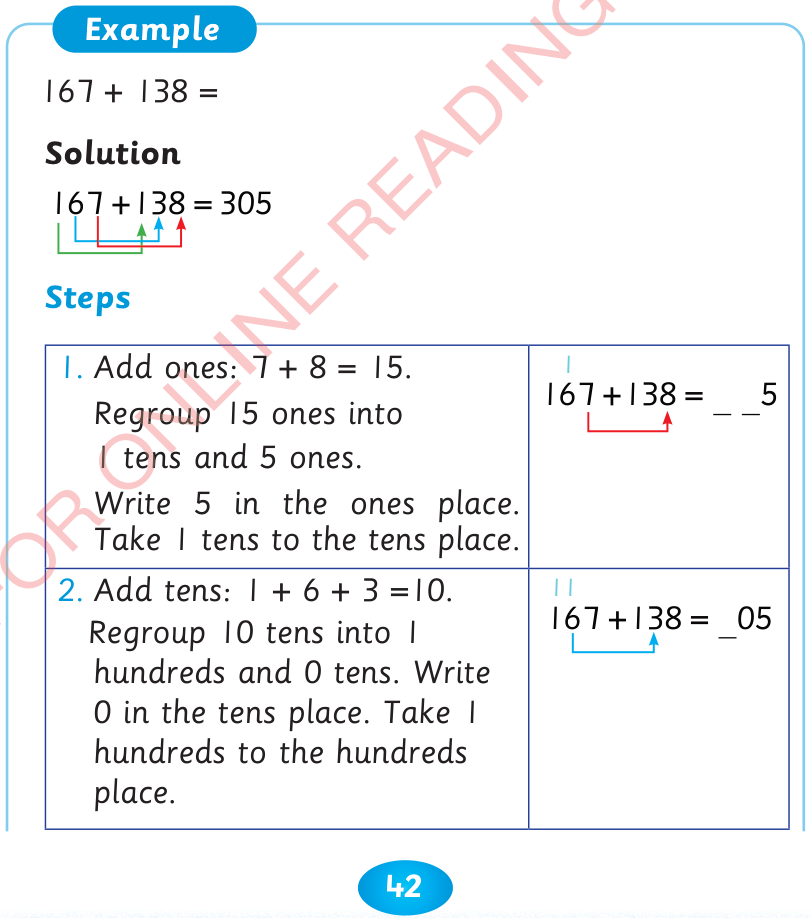
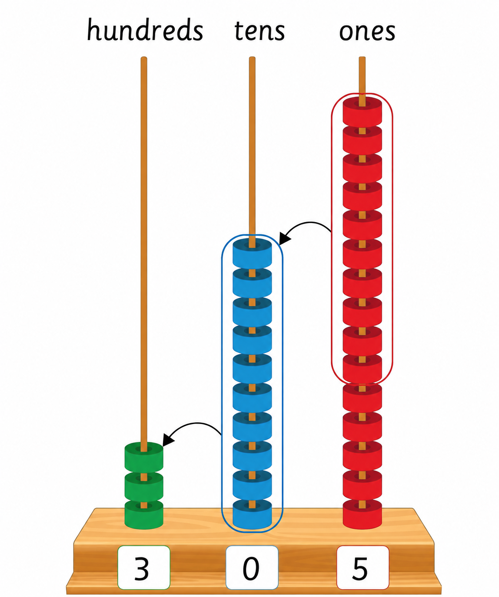

Adding numbers horizontally by regrouping
Numbers can be added horizontally by regrouping.
Regrouping is done by changing groups from lower place values to higher place values.
167 + 138 =
Solution

Steps
1. Add ones: 7 + 8 = 15.
Regroup 15 ones into 1 ten and 5 ones.
Write 5 in the ones place.
Take 1 ten to the tens place.
2. Add tens: 1 + 6 + 3 = 10.
Regroup 10 tens into 1 hundred and 0 tens.
Write 0 in the tens place.
Take 1 hundred to the hundreds place.
3. Add hundreds: 1 + 1 + 1 = 3.
Write 3 in the hundreds place.
Therefore, the answer is 305.
Or

Therefore, 167 + 138 = 305.